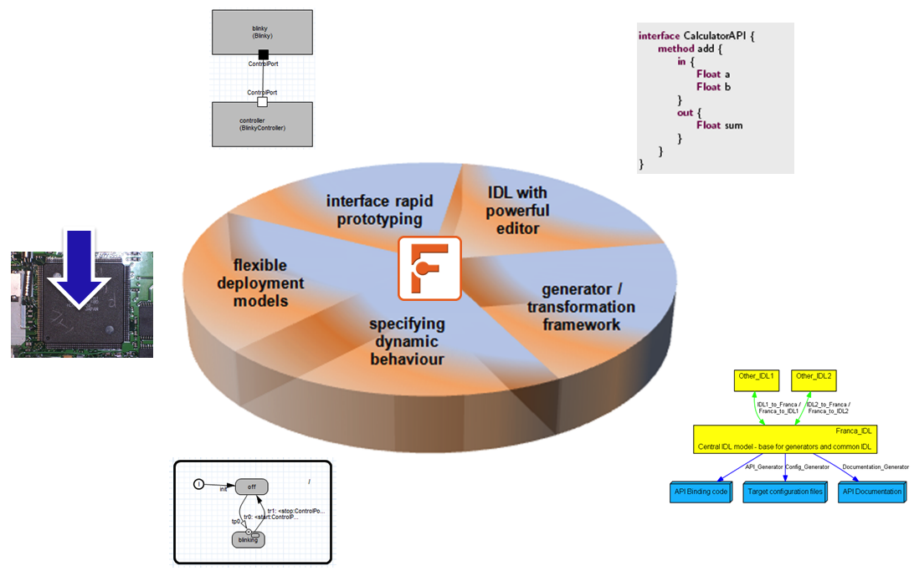
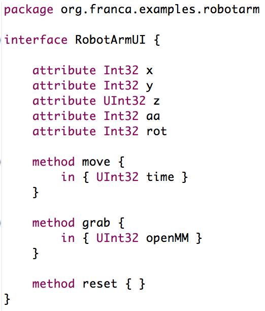
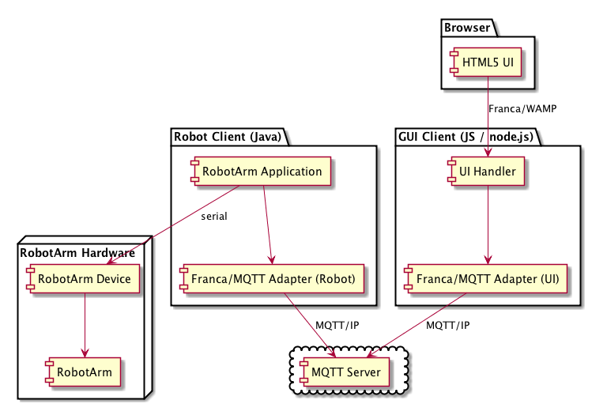
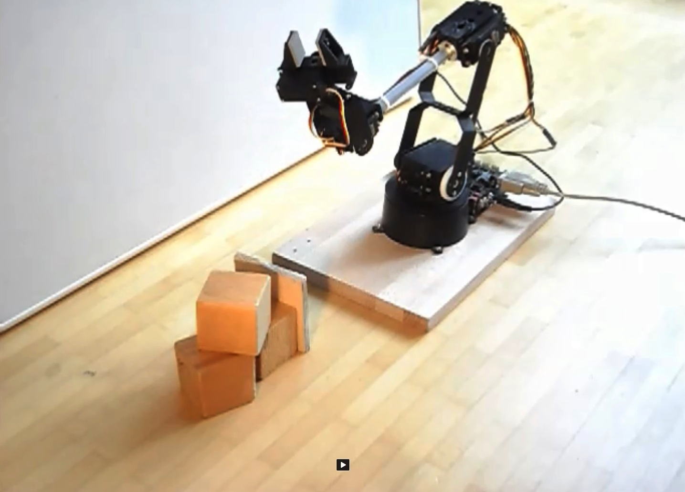

Building HTML5 User Interfaces
with Franca for IoT devices
Tamas Szabo and Klaus Birken
itemis AG
Eclipse DemoCamp Luna, Stuttgart
Overview
- Franca Overview
- Internet of Things
- Franca/IoT showcase
- Demo
- Summary and next steps
Franca
- is a tool environment for definition and transformation
of software interfaces
- has been designed to facilitate software and system integration
- is running on the Eclipse platform
- is an open-source project hosted on Eclipse Labs since early 2012
- has been proposed as an
official Eclipse Project
|
|
A brief history of Franca
Franca feature overview

An example interface definition

Architecture of product with HTML5 UI
HTML5 UI connected to (embedded) application component(s).
HTML5 UI supported by Franca
- Idea: Generate JS and C++ bindings from Franca interface
- UI and application do not have to care about communication details.
- Client: HTML5, CSS and JS
- Server 1: Node.js and JS
- Server 2: CommonAPI and C++
- Server 3: ...
Using WebSockets for IPC
- WebSockets is a
standard
(IETF RFC 6455)
- bidirectional, low-latency, message-based
- quite low-level, only provides raw messaging
Using WAMP as a standard protocol
- WebSocket Application Messaging Protocol
- officially registered
WebSocket subprotocol
- higher level messaging patterns: RPC and publish/subscribe
- uses WebSockets, JSON and URIs
HTML5 UI with Franca: Comm. Stack
Architecture. The yellow layer is generated from Franca interfaces.
Benefits of using Franca for HTML5 UI
- Clear, reusable interface definitions
- Easy-to-use generated APIs
- Multi-modal UI support (e.g., Speech, Gestures)
- Flexible server implementation (incl. remote)
- Additional tools can be used (e.g. contracts)
Internet of Things
- Let's connect all different kinds of things together within the Internet
- Not just laptops and mobile phones, but all kinds of sensors and devices
- Advanced connectivity of devices, more than simple M2M communication
MQTT
- Message Queue Telemetry Transport
- Publish-subscribe based messaging protocol
- Light-weight (small message overhead)
- Based on the TCP/IP protocol
- Various QoS for message delivery (at least once, at most once, exactly once)
- Designed to be usable in constrained environments
- Mosquitto: Message broker implementation
- Open-source Eclipse project
- MQTT Client implementation
- Various languages (JS, Java, C/C++, Lua)
The Franca/IoT showcase
- Robot arm as IoT device
- HTML5 user interface for controlling the robot arm
- direct control, and
- example high-level application
- Franca
- define interfaces between UI and application
- generate code for WebSocket communication
Showcase architecture

Final points
- Benefits of using Franca
- application logic could be designed independently from implementation
- part of the implementation could be generated automatically
- eases the integration of components from different domains, e.g., UI and IoT
(1h in our case)
- Future work
- automatic generation of Franca/MQTT connector
- add more IoT devices to the example (sensors, ...)
Thanks for your attention!
